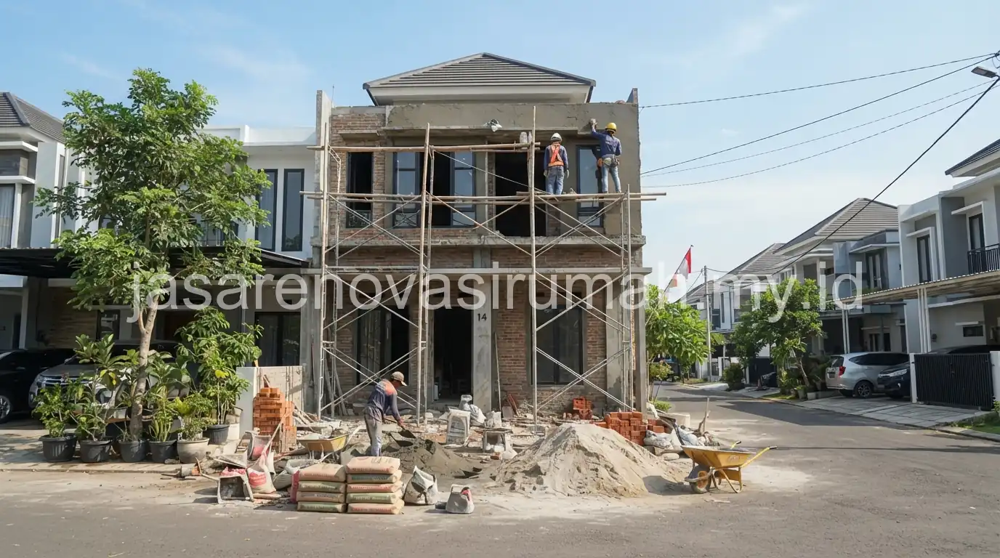
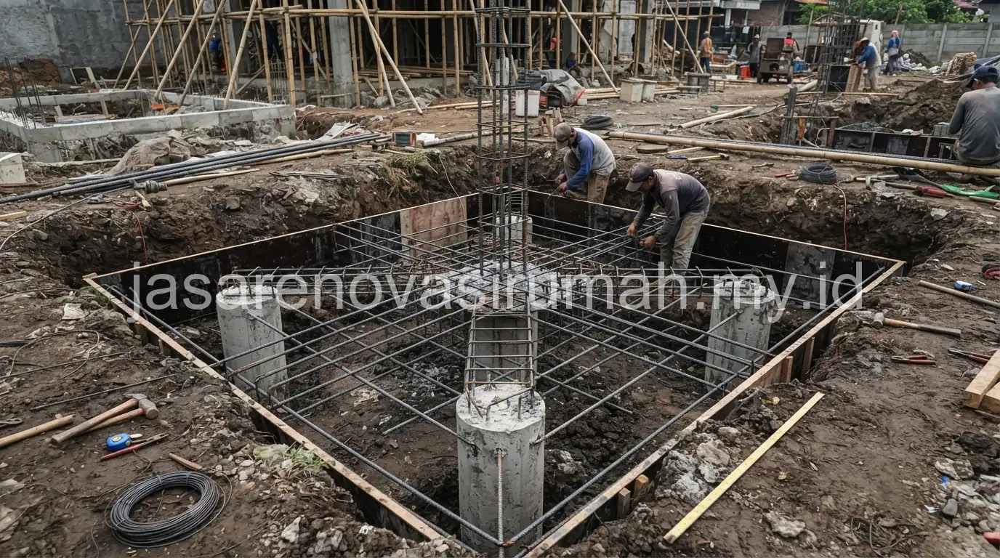

Jasa renovasi rumah Sidoarjo yang terpercaya menawarkan survey lokasi gratis dan desain 3D yang bisa disiapkan dengan cepat, sehingga pemilik rumah kluster di kawasan seperti Waru dan Candi bisa segera mendapatkan gambaran hasil akhir sebelum memutuskan anggaran.
Kebutuhan renovasi di kawasan kluster Sidoarjo cukup spesifik, terutama untuk penambahan lantai 2 yang membutuhkan solusi struktur seperti cakar ayam agar bangunan tetap kokoh menopang beban tambahan.
Apa Karakteristik Renovasi Rumah Kluster di Kawasan Waru dan Candi, Sidoarjo?
Rumah kluster di kawasan Waru dan Candi umumnya memiliki tipe bangunan yang seragam dengan lahan terbatas, sehingga renovasi yang paling sering dibutuhkan adalah penambahan ruang vertikal berupa lantai 2 dibanding perluasan ke samping.
Beberapa karakteristik yang membedakan renovasi rumah kluster di kawasan ini dibanding rumah tapak biasa:
- Jarak antar rumah yang berdempetan membuat akses material dan alat kerja menjadi lebih terbatas dibanding rumah dengan lahan luas.
- Desain awal rumah kluster seringkali menggunakan struktur pondasi standar yang perlu dievaluasi ulang sebelum menambah beban lantai 2.
- Aturan renovasi di beberapa kluster memiliki ketentuan tersendiri terkait jam kerja dan batas ketinggian bangunan yang diperbolehkan.
- Kebutuhan koordinasi dengan tetangga terdekat sering diperlukan mengingat jarak bangunan yang berdempetan langsung.
Kontraktor yang berpengalaman menangani rumah kluster di kawasan Waru dan Candi biasanya sudah familiar dengan pola bangunan yang serupa di berbagai kluster Sidoarjo, sehingga proses evaluasi awal bisa dilakukan lebih cepat dibanding menangani rumah dengan desain yang benar-benar unik.
Bagaimana Solusi Struktur Cakar Ayam untuk Penambahan Lantai 2?
Struktur cakar ayam atau pondasi foot plate adalah solusi yang umum digunakan untuk memperkuat titik kolom saat rumah kluster akan ditambah lantai 2, terutama jika pondasi awal rumah tersebut belum dirancang untuk menopang beban bertingkat.
Berikut tahapan umum penerapan solusi struktur cakar ayam pada renovasi penambahan lantai 2:
- Evaluasi kondisi pondasi eksisting untuk memastikan apakah masih memungkinkan diperkuat atau perlu dibangun ulang sebagian.
- Perhitungan struktur oleh insinyur untuk menentukan dimensi dan kedalaman cakar ayam yang sesuai dengan beban lantai 2 yang direncanakan.
- Penggalian titik-titik kolom sesuai gambar struktur, kemudian pemasangan tulangan besi dan pengecoran pondasi cakar ayam baru.
- Penyambungan kolom baru dengan struktur lama menggunakan teknik yang memastikan kekuatan sambungan tetap terjaga.
Proses ini membutuhkan ketelitian khusus karena harus menyatukan struktur baru dengan bangunan lama yang sudah berdiri, berbeda dengan pembangunan rumah baru yang bisa merancang seluruh struktur dari awal tanpa keterbatasan bangunan eksisting.

Spesifikasi Besi Beton Ulir Seperti Apa yang Sesuai Standar SNI untuk Penambahan Lantai?
Besi beton ulir yang digunakan untuk penambahan lantai 2 sebaiknya memenuhi standar SNI dengan diameter dan mutu baja yang disesuaikan kebutuhan struktur berdasarkan hasil perhitungan insinyur.
Berikut gambaran spesifikasi besi beton ulir standar SNI yang umum digunakan pada renovasi penambahan lantai:
| Diameter Besi | Kegunaan Umum | Mutu Baja Standar SNI |
|---|---|---|
| 10 mm | Tulangan sengkang (begel) kolom dan balok kecil | BjTS 420 |
| 13 mm | Tulangan utama kolom praktis | BjTS 420 |
| 16 mm | Tulangan utama kolom struktural dan balok utama | BjTS 420 atau BjTS 520 |
| 19 mm | Tulangan struktur untuk beban lebih besar, jarang dipakai rumah tinggal | BjTS 520 |
Penggunaan besi dengan sertifikasi SNI penting untuk memastikan kekuatan tarik material sesuai standar, mengingat besi tanpa sertifikasi berpotensi memiliki dimensi atau mutu yang tidak konsisten meski terlihat serupa secara fisik.
Kesalahan dalam pemilihan diameter atau mutu besi bisa berakibat serius pada kekuatan struktur, terutama untuk penambahan lantai yang menambah beban signifikan pada bangunan lama.
Mengapa Survey Lokasi dan Desain 3D Penting Sebelum Renovasi Dimulai?
Survey lokasi membantu kontraktor memahami kondisi struktur eksisting secara langsung, sementara desain 3D memberikan gambaran visual hasil akhir yang memudahkan pemilik rumah membayangkan perubahan sebelum benar-benar dieksekusi.
Survey lokasi pada rumah kluster khususnya penting untuk mengevaluasi kondisi pondasi, ketebalan dinding, serta jarak dengan bangunan tetangga yang bisa memengaruhi metode kerja saat renovasi.
Desain 3D yang disiapkan dengan cepat juga membantu proses diskusi antara pemilik rumah dan tim desain menjadi lebih efisien, karena revisi bisa dilakukan pada tahap gambar sebelum material benar-benar dipesan dan pekerjaan fisik dimulai.
Kombinasi survey lokasi yang teliti dan desain 3D yang jelas ini pada akhirnya membantu meminimalkan risiko kesalahan konstruksi, terutama untuk pekerjaan struktural seperti penambahan lantai 2 yang tidak bisa diperbaiki dengan mudah jika terjadi kesalahan di tengah proses pengerjaan.
Apa Saja yang Perlu Dikoordinasikan dengan Pengelola Kluster Sebelum Renovasi?
Sebelum memulai renovasi, terutama untuk penambahan lantai 2, pemilik rumah sebaiknya mengecek aturan renovasi dan perizinan yang berlaku di kluster masing-masing, termasuk batas ketinggian bangunan dan jam kerja yang diperbolehkan.
Beberapa hal yang perlu dikoordinasikan dengan pengelola kluster atau RT/RW setempat:
- Batas maksimal ketinggian bangunan yang diperbolehkan sesuai aturan kluster.
- Jam operasional pekerjaan konstruksi agar tidak mengganggu ketenangan tetangga sekitar.
- Prosedur pemberitahuan kepada tetangga terdekat mengingat jarak bangunan yang berdempetan.
- Ketentuan terkait akses masuk kendaraan pengangkut material ke dalam kawasan kluster.
Koordinasi ini penting dilakukan sejak awal untuk menghindari konflik dengan tetangga atau pengelola kawasan di tengah proses renovasi, yang berpotensi menghambat jadwal pengerjaan jika tidak diantisipasi sebelumnya.
Kesalahan Umum Saat Merenovasi Rumah Kluster untuk Penambahan Lantai 2
Kesalahan yang paling sering terjadi adalah langsung menambah lantai 2 tanpa mengevaluasi kekuatan pondasi eksisting, sehingga struktur bangunan lama tidak mampu menopang beban tambahan secara aman dalam jangka panjang.
Kesalahan lain yang perlu dihindari:
- Menggunakan besi beton tanpa sertifikasi SNI demi menghemat biaya material.
- Tidak berkoordinasi dengan pengelola kluster terkait aturan ketinggian bangunan sebelum desain difinalisasi.
- Mengabaikan dampak pekerjaan struktural terhadap bangunan tetangga yang berdempetan langsung.
Pada akhirnya, renovasi rumah kluster di Sidoarjo untuk penambahan lantai 2 membutuhkan perencanaan struktur yang matang, mulai dari evaluasi pondasi, pemilihan besi beton bersertifikasi SNI, hingga koordinasi dengan pengelola kawasan.
Tim kami siap membantu mulai dari survey lokasi gratis, penyusunan desain 3D, hingga pelaksanaan renovasi dengan solusi struktur cakar ayam yang aman untuk rumah kluster Anda di kawasan Waru, Candi, dan sekitar Sidoarjo.

Ainur Reza
Penulis Profesional & Praktisi Konstruksi
Ainur Reza adalah seorang penulis profesional yang memiliki ketertarikan mendalam pada dunia arsitektur dan konstruksi. Dengan pengalaman bertahun-tahun mengamati tren renovasi rumah, ia aktif membagikan panduan praktis, tips RAB, dan wawasan seputar material bangunan untuk membantu pemilik rumah mewujudkan hunian impian mereka dengan anggaran yang efisien.